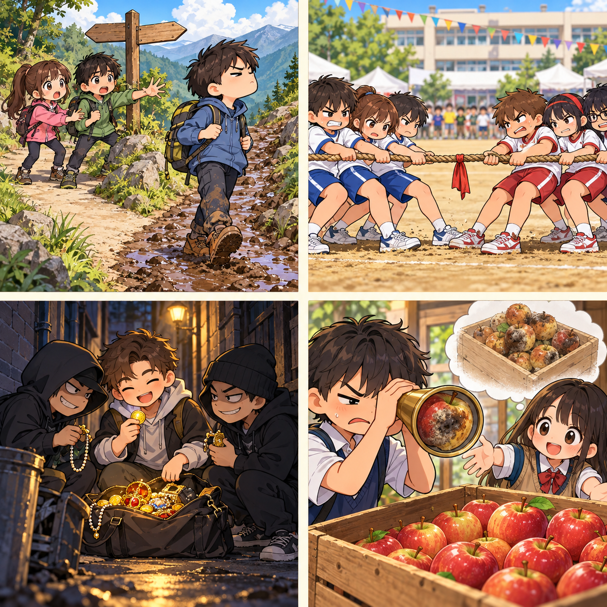
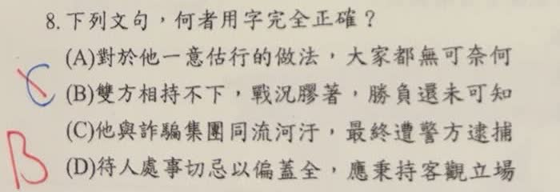

分享原卷｜第 8 題
完整原題
下列文句，何者用字完全正確？
(A) 對於他一意估行的做法，大家都無可奈何
(B) 雙方相持不下，戰況膠著，勝負還未可知
(C) 他與詐騙集團同流河汙，最終遭警方逮捕
(D) 待人處事切忌以偏蓋全，應秉持客觀立場
先想一想，再查看答案、解說與原圖
原卷作答：C（紅筆訂正B）
正確答案：B。相持不下、戰況膠著與勝負未可知，語意及用字皆正確。
逐項解析
| 選項與原句 | 判讀 | 句意與判斷理由 |
|---|---|---|
| (A) 對於他一意估行的做法，大家都無可奈何 | 不選 | 一意估行應為一意孤行；孤指獨自，形容不聽勸告而執意照自己的意思行事。 |
| (B) 雙方相持不下，戰況膠著，勝負還未可知 | 應選 | 相持不下、戰況膠著與勝負未可知，語意及用字皆正確。 |
| (C) 他與詐騙集團同流河汙，最終遭警方逮捕 | 不選 | 原卷為同流河汙，河應改成合，正寫同流合汙，指跟壞人一起做壞事。 |
| (D) 待人處事切忌以偏蓋全，應秉持客觀立場 | 不選 | 以偏蓋全應為以偏概全；概是概括，用片面情況推論全部。 |
詳細說明與解題步驟
題目問用字「完全正確」，不是只看句意大致通不通。A的估應改成孤；D的蓋應改成概；C的河應改成合，正寫為同流合汙，只有B全句正確。
固定詞語可從意思來記：一意孤行是獨自執意照自己的意思做；膠著像黏住一樣難有進展；同流合汙是與壞人共同做壞事；以偏概全是以局部概括整體。
C依使用者核對，原卷是「同流河汙」，本頁題目照原文保留，解說只將河訂正為合。先前的河汗是圖片辨識誤差，不是原卷用字。來源AI另外提出「同流汙合」的寫法，也不沿用；本題依教育部《成語典》的「同流合汙」學習。
漫畫依左上、右上、左下、右下比較一意孤行、相持不下、同流合汙、以偏概全。右下只見一顆壞蘋果便推論整箱都壞，示意的是推論以偏概全，不是整箱真的已壞。

核對註記：使用者核對原卷C為同流河汙，河改合，答案B；先前河汗為OCR辨識誤差。
原圖（僅本題）
